About Me
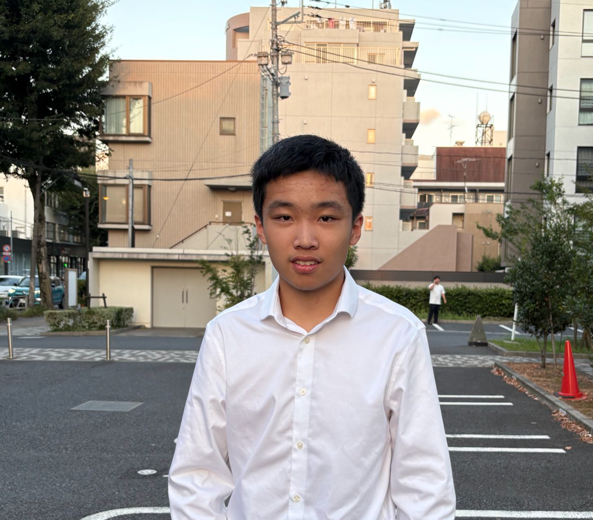
Hi, I'm Eddie! I am a tinkerer, researcher, and community-builder passionate about computer vision and robotics that enable reliable operation in dynamic, real-world environments. Thanks for stopping by!
Research Projects
SPIRo (Soft Pipe Inspection Robot)

SPIRo rotation animation.
SPIRo crawling demonstration video. Video Link
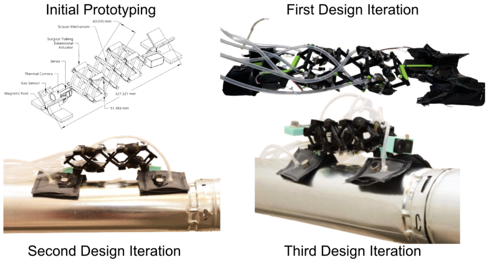
SPIRo Progression
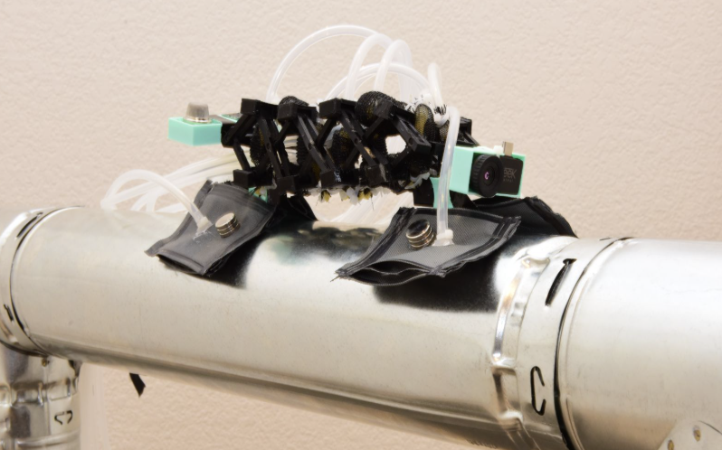
SPIRo crawling on a horizontal pipe

SPIRo control circuit

SPIRo at Conrad Challenge event.

Working with METEC Staff
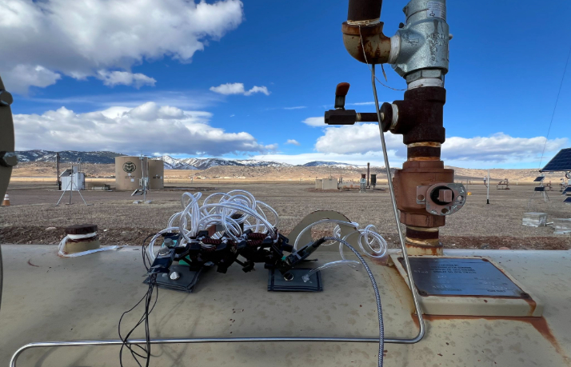
SPIRo in field testing at METEC
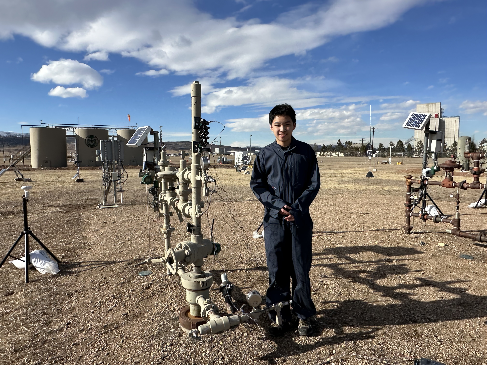
Testing at METEC
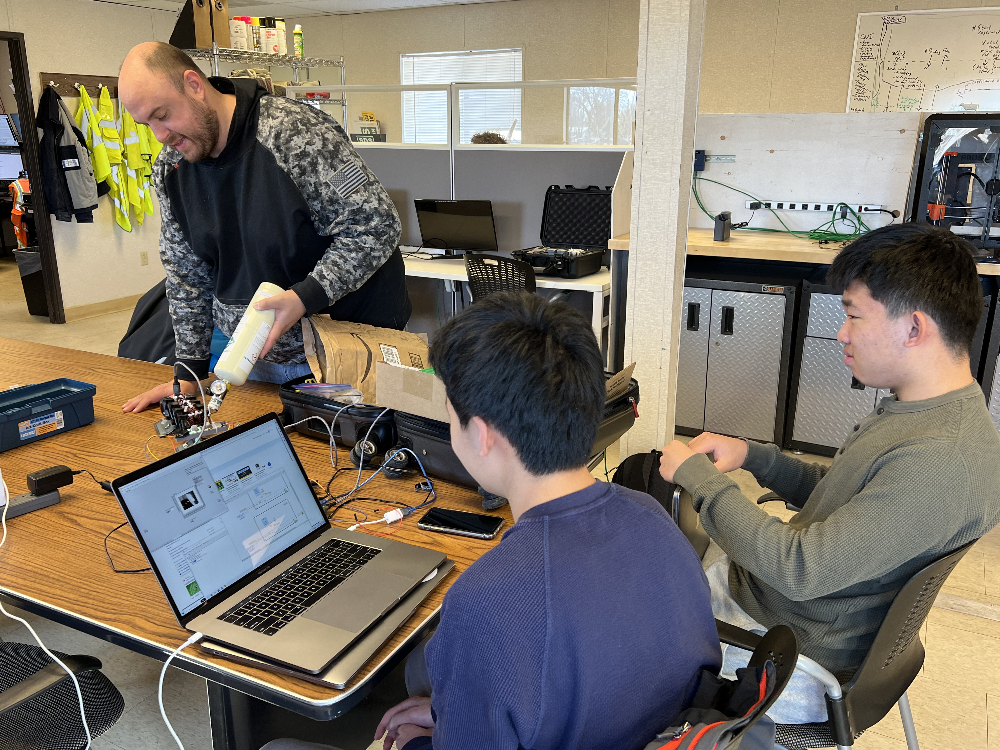
Getting SPIRo sensors calibrated before testing
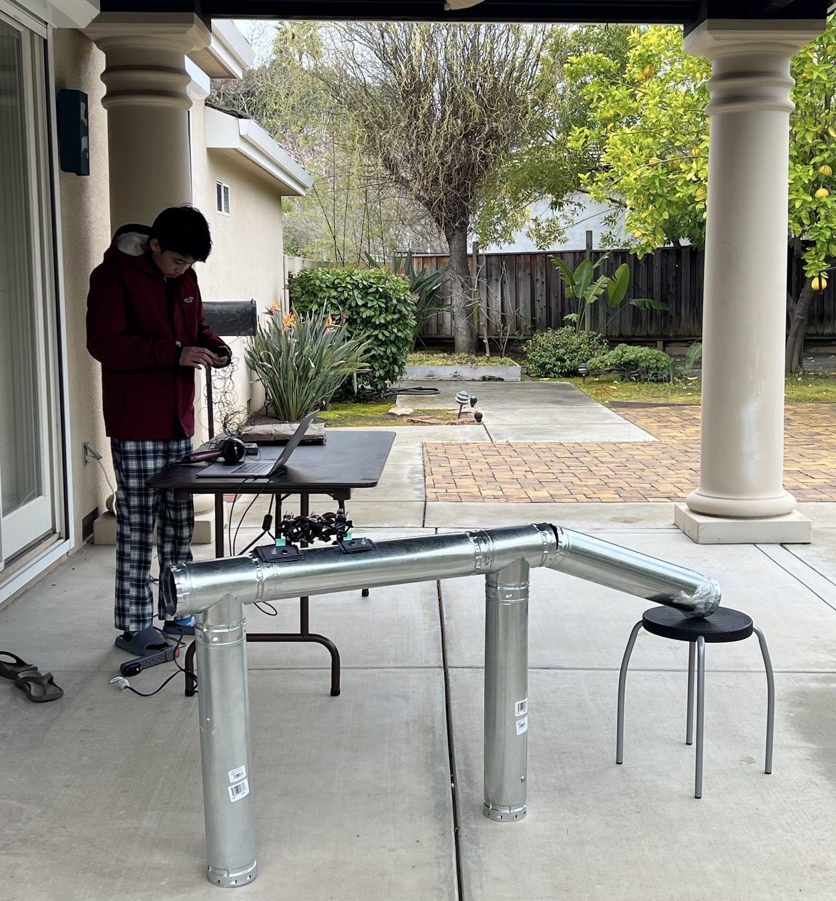
At-Home Testing of SPIRo
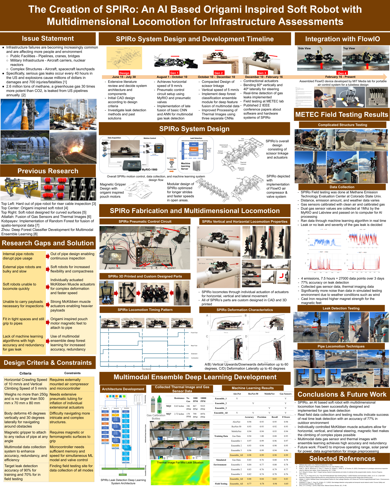
SPIRo Research Poster (View Enlarged PDF)
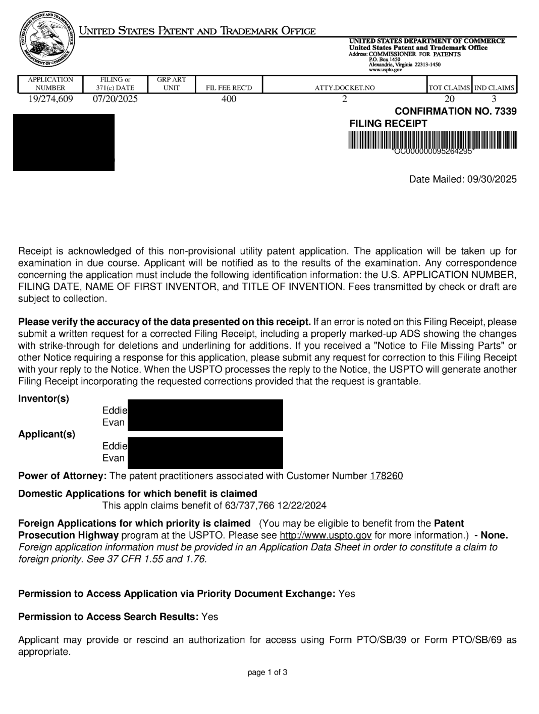
Patent, To-Be Published Soon
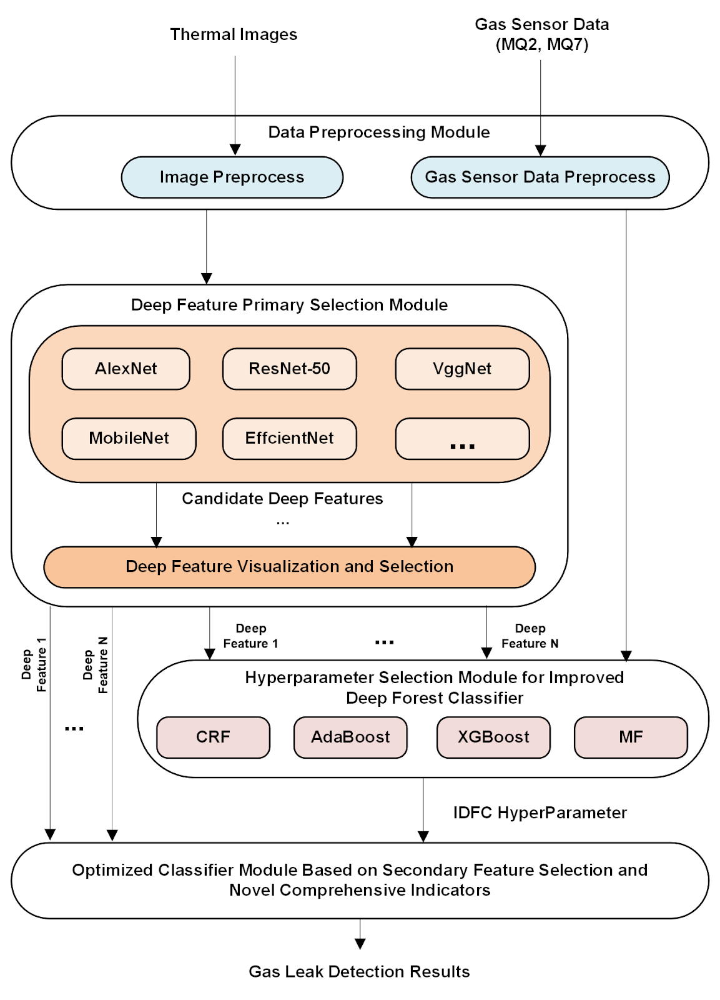
SPIRo Gas Leak Detection ML Model
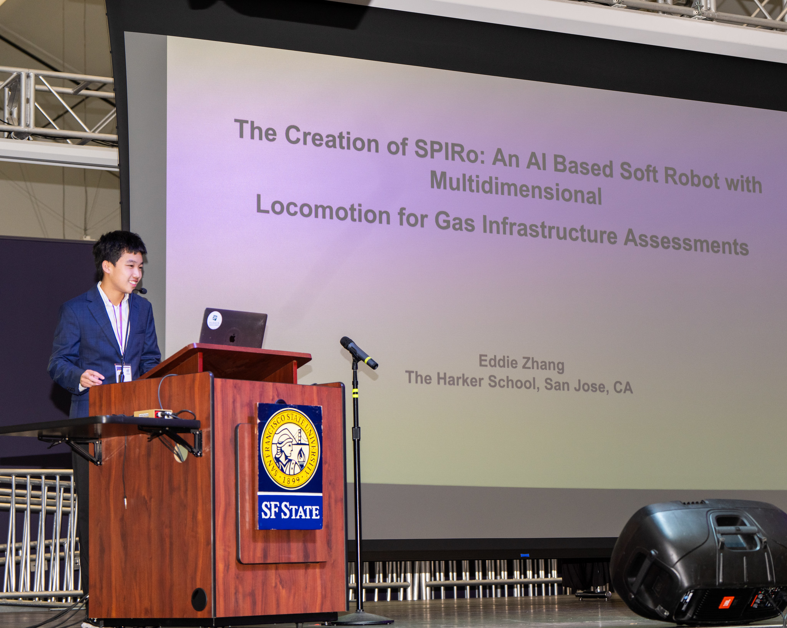
Oral Presentation at JSHS
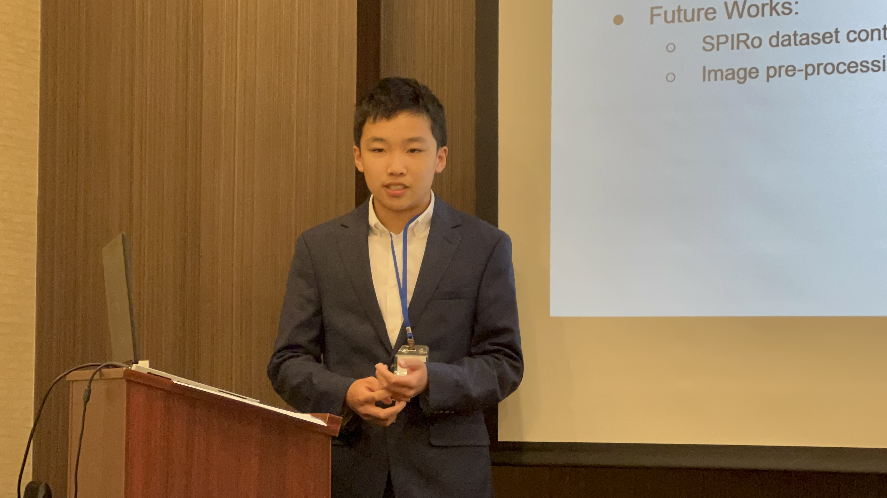
Presentation at ICMI
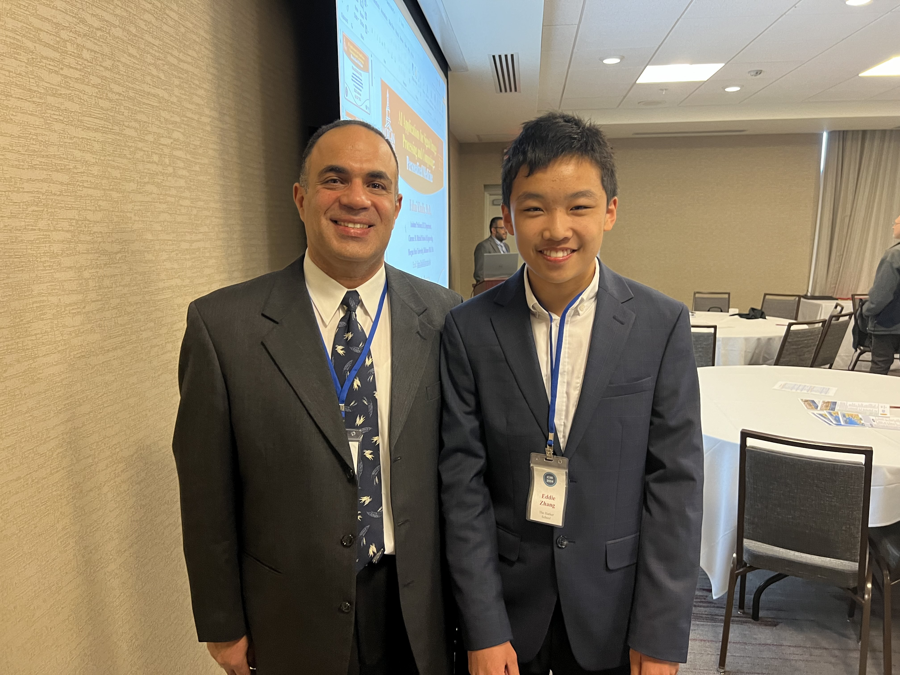
At ICMI with Professor Ahmed Abdelgawad
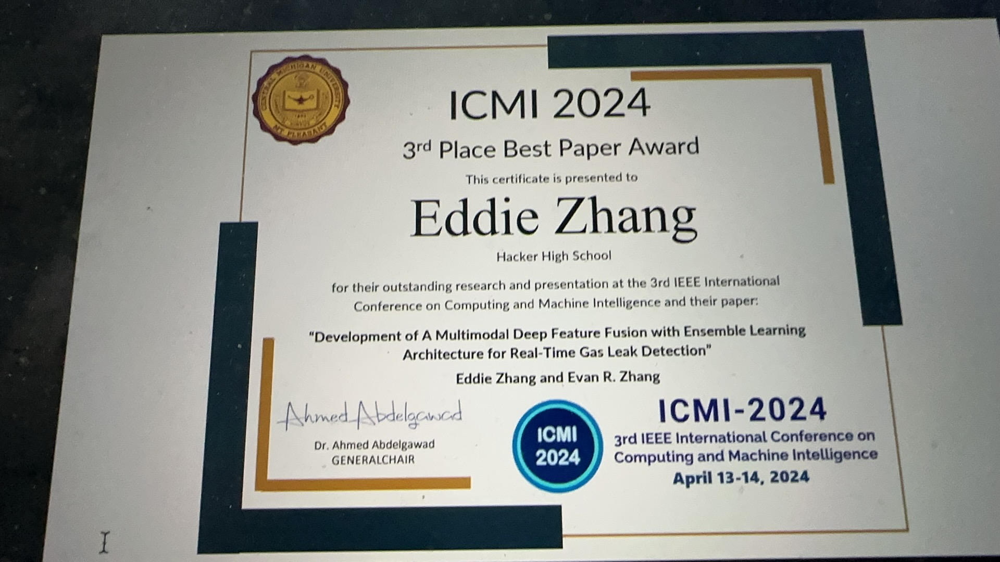
ICMI 3rd Best Paper Award

Presentation at Robosoft '25
Soft Pneumatic Inspection Robot for Environmental Protection.
SPIRo, short for soft pipe inspection robot, was born from my personal experience with a gas leak explosion. Further investigating the dangers of faulty gas pipelines online, I discovered, in the US, half a million undetected leaks release 7.1 million tons of methane annually. However, existing leak detection methods remain costly, inefficient, and difficult to deploy at scale due to the harsh environments pipelines are found in. Together with my brother Evan, I developed SPIRo, using emerging soft robot technology, allowing it to adaptively navigate pipelines while using its sensors and an ML framework to scan for leaks.
SPIRo is fully 3D printed, and we custom-designed the robot from scratch in CAD, from its magnetic grippers to its flexible scissor linkage. To enable faster movement, SPIRo is equipped with McKibben artificial muscles that pneumatically inflate and deflate to push the robot’s scissor linkage. It follows an inch-worm inspired movement. SPIRo’s magnetic feet also alternate adhering and lifting away from the pipe, allowing the expanded scissor linkage to shift forward. A similar thing happens for vertical locomotion.
I developed a custom circuit using MOSFETs that regulates the opening and closing of the pneumatic valves that control the flow of air to and from each of SPIRo’s actuators, modeling its movement. The first iteration of SPIRo was equipped with two gas composition sensors for methane and carbon monoxide, where the data was processed by a simple artificial neural network to determine the presence of a leak. However, during outside at-home tests, I discovered that wind would blow the gas plume away from the sensors, leading to false negatives. Thus, I equipped SPIRo with a thermal camera as well, allowing it to “see” the rising gas plumes. These thermal images were processed with CNNs, while the gas sensors were processed with ANNs, before their predictions were finally fused.
After at home tests, I conducted rigorous real-field testing at the Methane Emissions Technology Evaluation Center collecting over 20,000 data points. One shortcoming that I noticed from these field tests was that the ML architecture I currently had implemented was too large and inefficient. Thus, using these learnings, I sought to develop a new, more efficient architecture through reducing model size. That led me to looking deeper into the CNNs that I was currently using. Since CNNs are pre-trained and developed on larger datasets such as ImageNet, I was curious to see if these full architectures were actually the best for detecting gas leaks from thermal images, or if only using a subsection of the layers was sufficient, which would save computation time. In fact, removing layers would help to prevent overfitting and improve accuracy too! I dissected each of the CNNs that I was using and analyzed the features extracted by each layer. I was fascinated by how different CNNs and their inner layers reacted to an infrared image of a gas leak, with some placing more emphasis on the color contrasts between the warmer (leak) regions and the cooler (no leak) regions, while others highlighted the boundary between the two regions. I decided to take a diverse set of the represented features from different CNNs to improve robustness, and this new architecture achieved an accuracy of 95% on field data. It is also one of the highlights of my journal paper!
SPIRo has gained the attention of entrepreneurs through winning the Conrad Challenge, and we are currently expanding our startup Enviro-AI to distribute SPIRo around the world, reaching out to venture capitalists from MIT, Equinor, and the 1517 Fund. I hope SPIRo will be on every pipeline around the world in the coming years.
I have co-founded a start-up, Enviro-AI, to bring this product to market.
Recognition
- Conrad Challenge – Pete Conrad Scholar, received $10K to fund innovation (2025), (Presentation)
- Diamond Challenge Finalists (2025)
- National Junior Science and Humanities Symposium – Oral Presentation (2024)
- Medici Grant – $1000 from 1517 Fund (2025)
- Sigma Xi Honorific Research Society – Research Showcase First Place, $500 Prize (2025)
- JSHS Northern California – 2nd Place, $1500 (2024)
- Synopsys Science Fair – 2nd Award, Physical Sciences (2024, 2025)
- Synopsys Science Fair – IEEE Special Award (2024)
Publications
- E. Zhang and E. Zhang (2025) " Gas pipeline leakage detection based on multiple multimodal deep feature selections and optimized deep forest classifier ." Frontiers in Environmental Science, 13:1569621. doi: 10.3389/fenvs.2025.1569621.
- E. Zhang and E. Zhang, " Development of A Multimodal Deep Feature Fusion with Ensemble Learning Architecture for Real-Time Gas Leak Detection ," 2024 IEEE 3rd International Conference on Computing and Machine Intelligence (ICMI), Mt Pleasant, MI, USA, 2024, pp. 1-6, doi: 10.1109/ICMI60790.2024.10585716. (Slides), (Won Best Paper Award)
- E. Zhang and E. Zhang, " Omnimobile and Load Capable Pneumatic Soft Robot for Gas Distribution Pipeline Inspection ," 2025 IEEE 8th International Conference on Soft Robotics (RoboSoft), Lausanne, Switzerland, 2025, pp. 1-6, doi: 10.1109/RoboSoft63089.2025.11020922. (Slides, Full-form 8-minute Talk)
- E. Zhang and E. Zhang, " SPIRo: An AI Based Origami Inspired Soft Robot with Multidimensional Locomotion and Multimodal Data Analysis for Infrastructure Assessments ," 2024 36th Chinese Control and Decision Conference (CCDC), Xi'an, China, 2024, pp. 3056-3061, doi: 10.1109/CCDC62350.2024.10587655. (Slides)
- Provisional Patent Granted, Full Patent to be published in January, 2026.
AI Copilot for Trauma Surgery
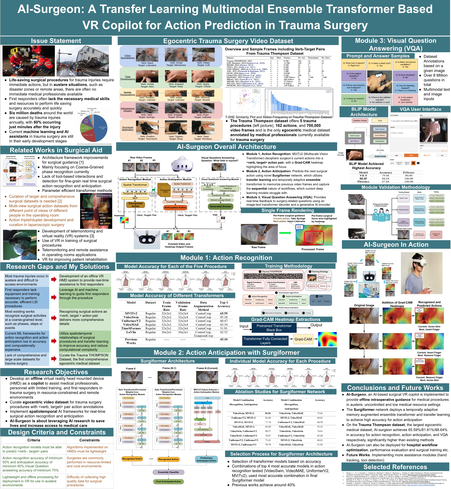
Copilot Research Poster (View Enlarged PDF)

With Mainikin in CARE Lab at Purdue
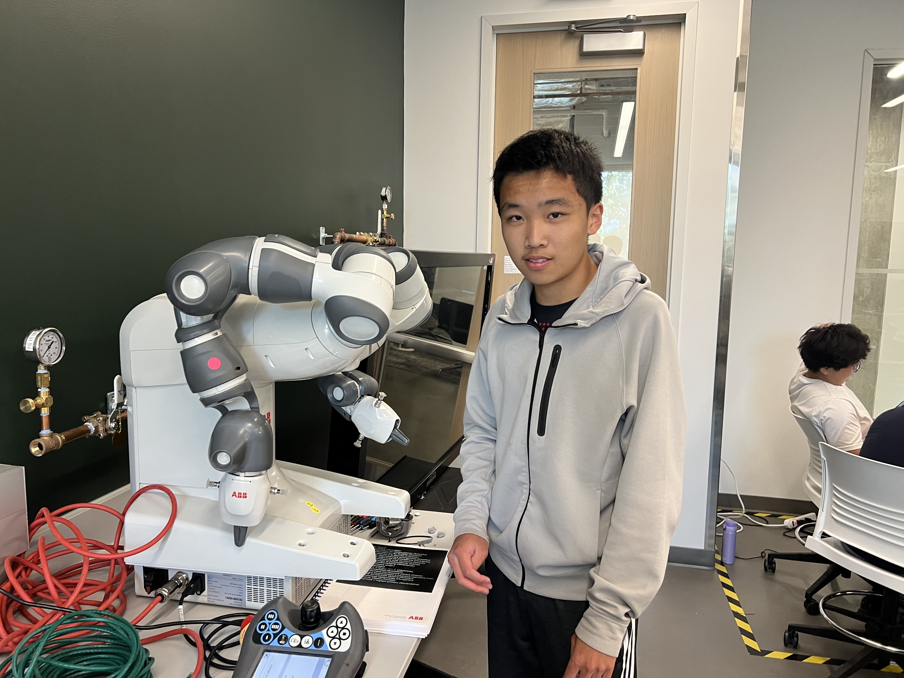
With ABB medical Robot in CARE
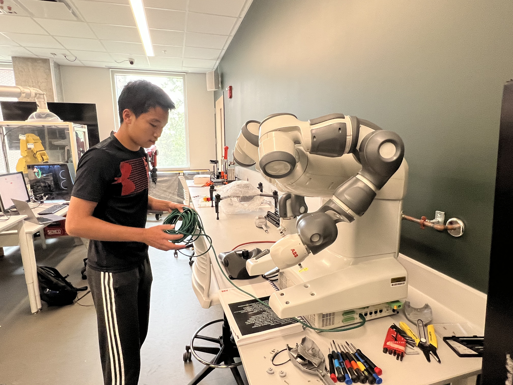
Working on the ABB Robot
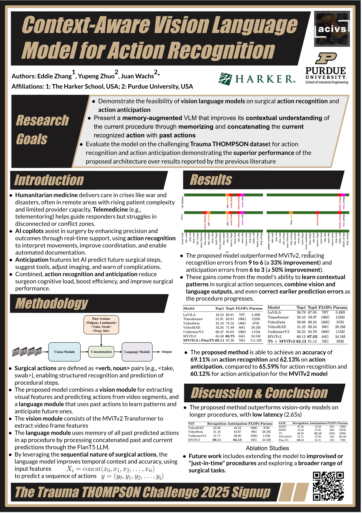
ACIVS2025 Conference Poster (View Enlarged PDF)
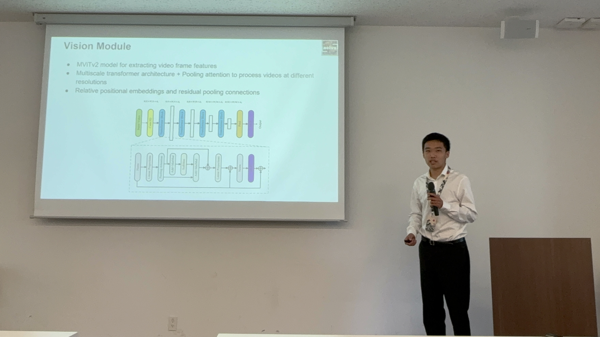
Presentation at ACIVS2025 in Tokyo

With Professor Patrice Delmas
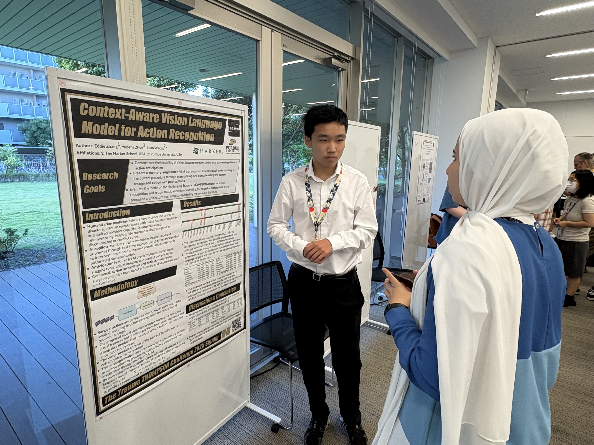
Engaging Discussions with Researchers at ACIVS2025
AI Copilot for Trauma Surgery
Access to life-saving humanitarian care in natural and man-made emergency conditions is challenging due to limited equipment and medical expertise. AI copilots are transforming surgery by providing real-time assistance, enhancing precision, and improving patient outcomes. I proposed a memory-augmented vision-language model (VLM) for surgical action recognition and anticipation to assist medical decision-making.
The proposed architecture consists of two modules: the vision module and the language module. The vision module is based on the MViTv2 transformer, and its outputs are fed into the language module. Because medical actions are often consecutive, with one action consistently performed after another, the language module is augmented with memory of previous actions through concatenating all past actions recognized or anticipated by the vision module. The language module, based on the FlanT5 Large Language Model (LLM) architecture, makes the final prediction on the recognized or anticipated action.
The Trauma THOMPSON dataset is employed for model training and validation. The format of the annotation is two words: a verb followed by a noun - for example,
The proposed architecture achieved a Top-1 accuracy of 69.11% on action recognition and 62.13% on anticipation, outperforming the results reported by previous literature.
My work is featured in Purdue IE News.
Recognition
- Synopsys Science and Technology Championship - 2nd Place in Physical Sciences (2025)
Publications
- Y. Zhuo, E. Zhang et al, An Egocentric Life-Saving Interventional Procedure Dataset of Actions, Medical Questions, Maneuvers and Tools in Nature Scientific Data (IF 6.9), 2025.
- E. Zhang, Y. Zhuo, and J. Wachs, Context-aware Vision Language Model for Action Recognition in Advanced Concepts for Intelligent Vision Systems, Aug 2025.
- Y. Zhuo, E. Zhang et al, The Trauma THOMPSON Dataset for Real-World Emergency AI in 36th British Machine Vision Conference, Nov 2025. (Oral presentation).
- Y. Zhuo, E. Zhang et al, Trauma THOMPSON: A Dataset and Realistic Generative Framework for AI Copilots in Emergency Care. in 38th Conf on the Innovative Applications of Artificial Intelligence, 2025. In press.
Algal Blooms
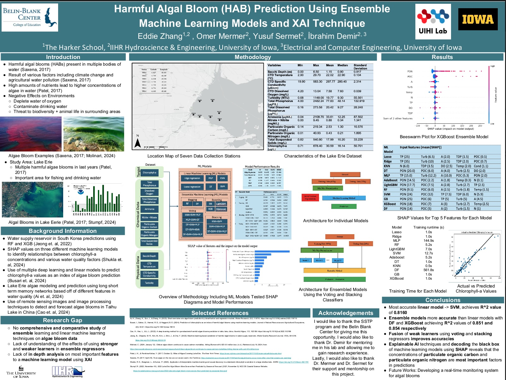
SSTP Poster (View Enlarged PDF)
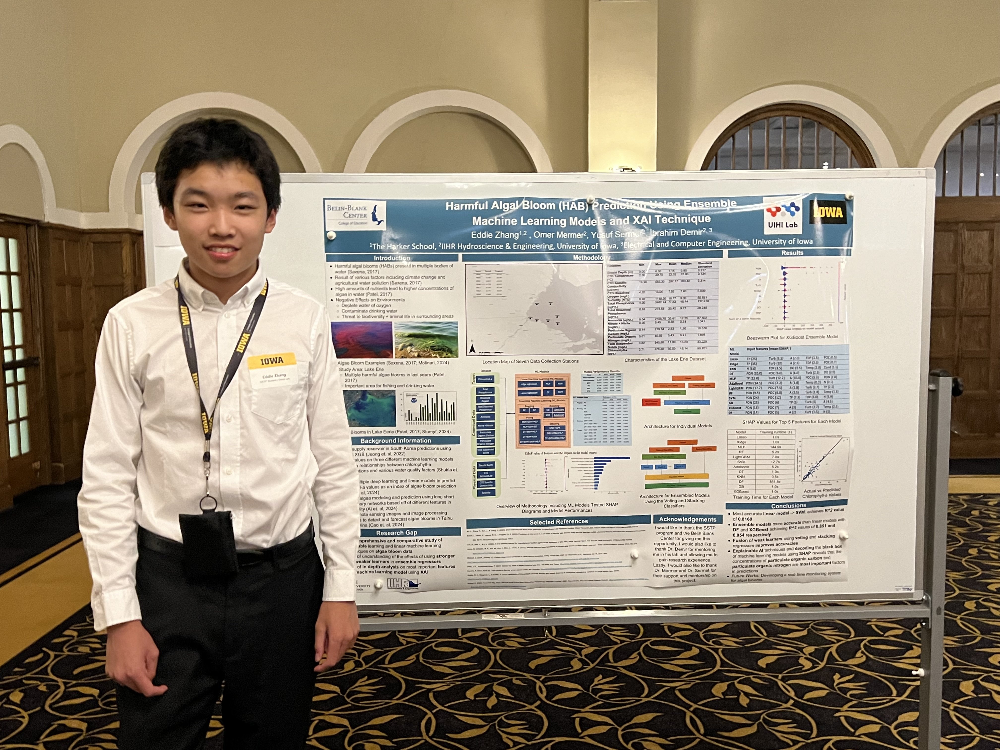
Poster Presetation.

With Professor
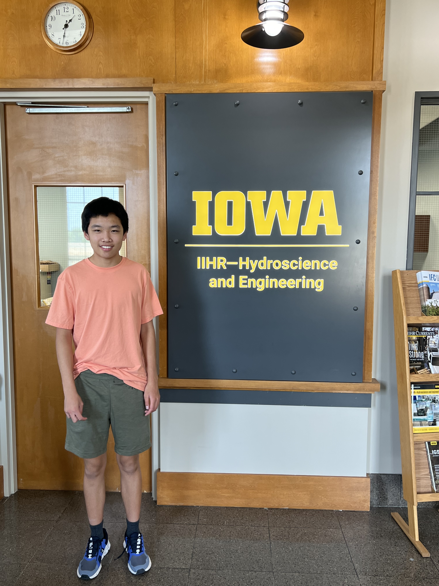
SSTP
Algal Blooms research at SSTP
Harmful algal blooms (HABs), driven by environmental pollution, pose significant threats to water quality, public health, and aquatic ecosystems. This study enhances the prediction of HABs in Lake Erie, part of the Great Lakes system, by utilizing ensemble machine learning (ML) models coupled with explainable artificial intelligence (XAI) for interpretability. Using water quality data from 2013 to 2020, various physical, chemical, and biological parameters were analyzed to predict chlorophyll-a (Chl-a) concentrations, which are a commonly used indicator of phytoplankton biomass and a proxy for algal blooms. This study employed multiple ensemble ML models, including random forest (RF), deep forest (DF), gradient boosting (GB), and XGBoost, and compared their performance against individual models, such as support vector machine (SVM), decision tree (DT), and multi-layer perceptron (MLP). The findings revealed that the ensemble models, particularly XGBoost and deep forest (DF), achieved superior predictive accuracy, with R2 values of 0.8517 and 0.8544, respectively. The application of SHapley Additive exPlanations (SHAPs) provided insights into the relative importance of the input features, identifying the particulate organic nitrogen (PON), particulate organic carbon (POC), and total phosphorus (TP) as the critical factors influencing the Chl-a concentrations. This research demonstrates the effectiveness of ensemble ML models for achieving high predictive accuracy, while the integration of XAI enhances model interpretability. The results support the development of proactive water quality management strategies and highlight the potential of advanced ML techniques for environmental monitoring.
Recognition
- GENIUS Olympiad Finalist (2025)
Publications
- O. Mermer, E. Zhang, and I. Demir, Comparative Study of Ensemble Machine Learning and Explainable AI for Predicting Harmful Algal Blooms in Big Data and Cognitive Computing (IF 4.4), 138, 2025.
Planetary Pulse

Water Quality vs Income

Air Pollution vs Cancer

Pollution Index vs Poverty Rate

Regulations vs Voting

Air Quality vs Voting
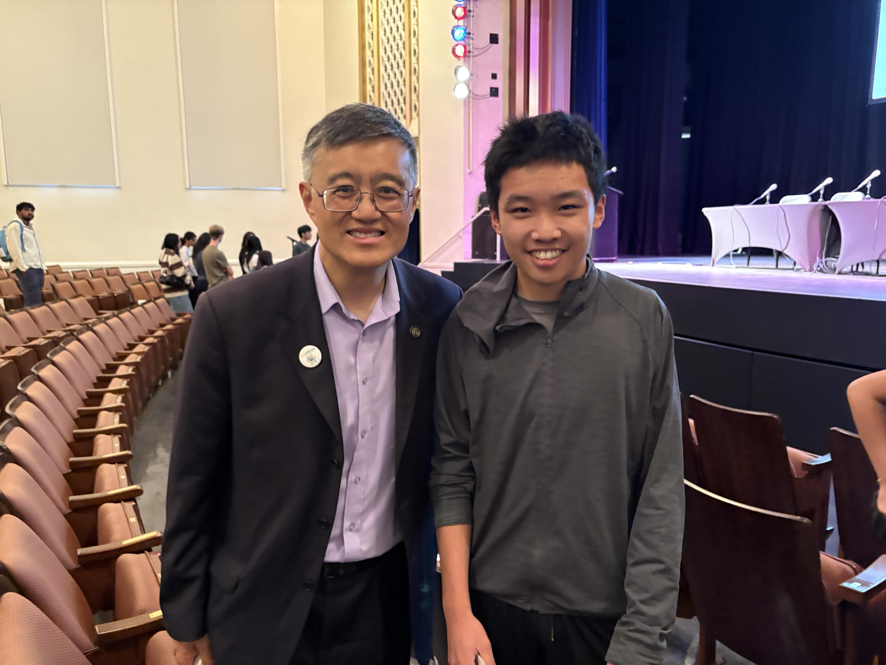
With County Supervisor Otto Lee @ Environmental Summit
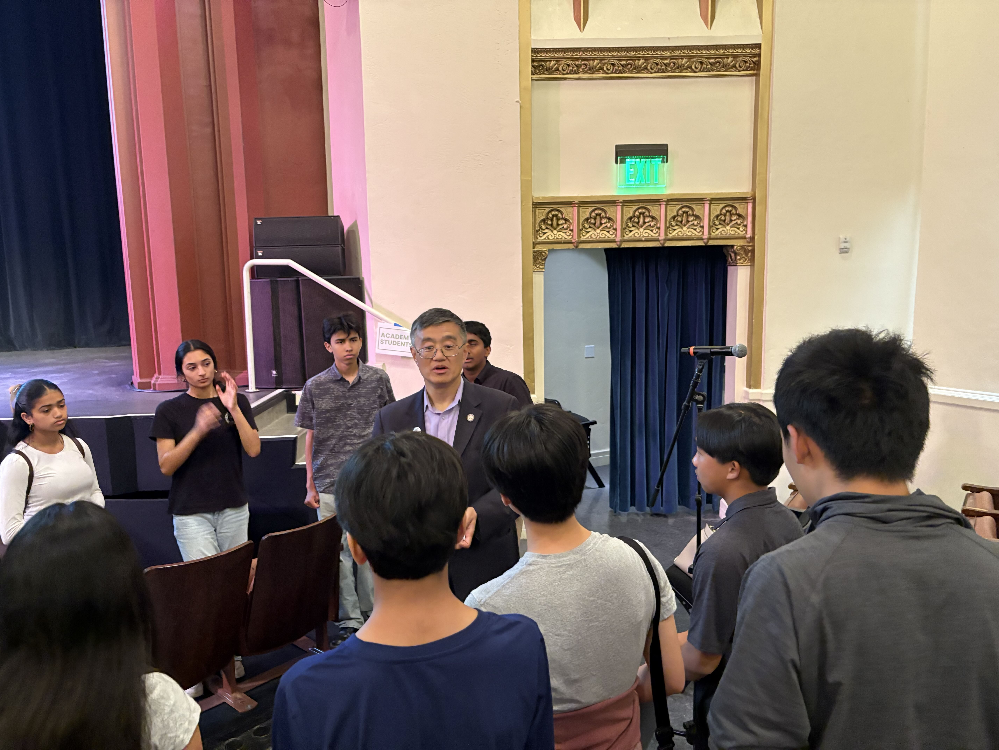
Discussing Issues with County Supervisor Otto Lee

Zoning

China
PlanetaryPulse.net
Planetary Pulse investigates the intersection between social justice and environmental pollution to improve the well-being of humans across the world. We raise awareness and deepen understanding about the environmental health and social equality through increasing the accessibility of environmental justice data and information. We highlight and foster awareness about the impact of pollution on vulnerable communities and to advocate for a just and sustainable future.